Contents
MyMainScript
clc; close all; clear; warning('off','all'); % Setting the color scale % my_num_of_colors = 256; col_scale = [0:1/(my_num_of_colors-1):1]'; my_color_scale = [col_scale,col_scale,col_scale]; % Set to_save to 1, if you want to save the generated pictures % to_save = 1; is_color = 1; % Loading and displaying the data % original_data = load('../../data/assignmentSegmentBrain.mat'); brain_image = original_data.imageData; brain_mask = original_data.imageMask; old_brain_image = brain_image; % savefig(my_color_scale,brain_image,"Original Brain MRI","Original_Brain_Image.png",0,to_save); % savefig(my_color_scale,brain_mask,"Brain Mask","Brain_Mask.png",0,to_save); brain_image = brain_image .* brain_mask; % savefig(my_color_scale,brain_image,"Brain Image after applying mask","Masked_Brain.png",0,to_save); [h, w, num_chan] = size(brain_image); tic;
Initialisation of parameters
K = 3; q = 1.51; nbr_mask = fspecial('gaussian',15,4); class_means = zeros(K,1); membership = zeros(h,w,K); bias = ones(h,w); num_iter = 100; % We use K+1 classes as the background is to be considered as a separate class in addition to the 3 we want to find [idx, C] = kmeans(brain_image(:),K+1); idx = reshape(idx, h,w); non_background = C>0.01; class_means = C(non_background); class_labels = (1:K+1); class_labels = class_labels(non_background); for k = 1:K membership(:,:,k) = idx==class_labels(k); membership(:,:,k) = membership(:,:,k).*brain_mask; end
Part a
fprintf('Chosen Value of q = %f \n',q);
Chosen Value of q = 1.510000
Part b
savefig(my_color_scale,nbr_mask,"Neighborhood Mask","Neighborhood_Mask.png",0,to_save);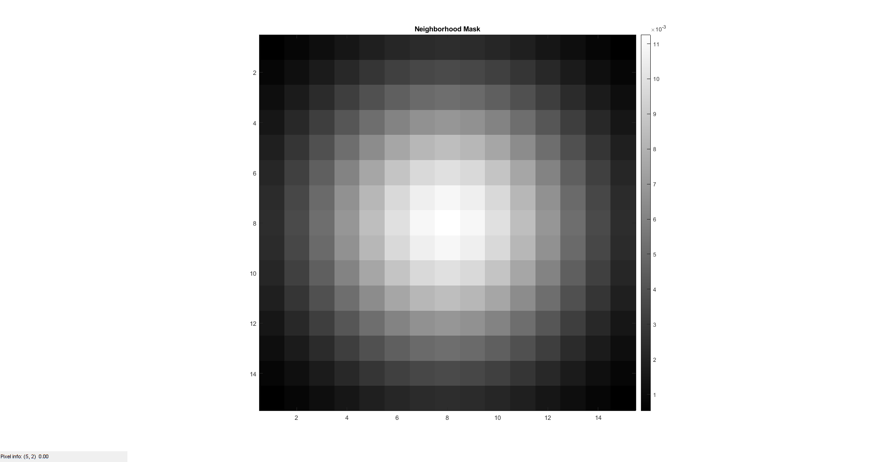
Part c
We choose K Means algorithm to initialise the membership which is hard as per K Means Motivation : We use the membership of K Means which is hard membership as the algorithm
% is analytical and there is no problematic zeroing of gradients for k = 1:K savefig(my_color_scale,membership(:,:,k),strcat("Initial Membership for k = ",num2str(k)),strcat("Initial_Membership_k_",num2str(k),".png"),0,to_save); end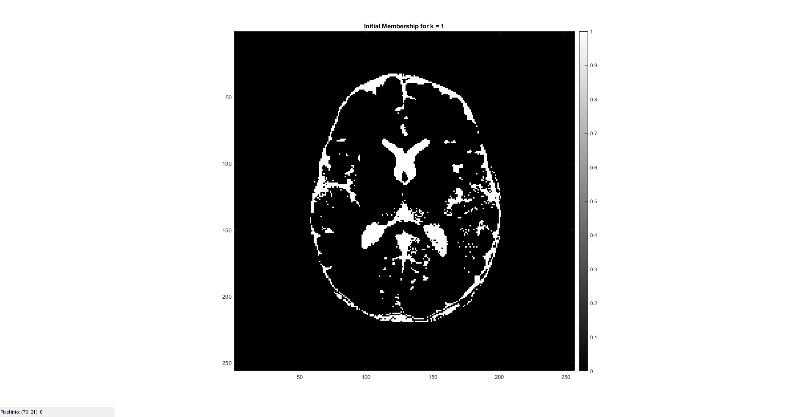 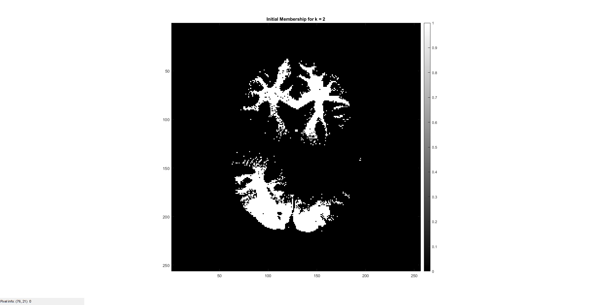 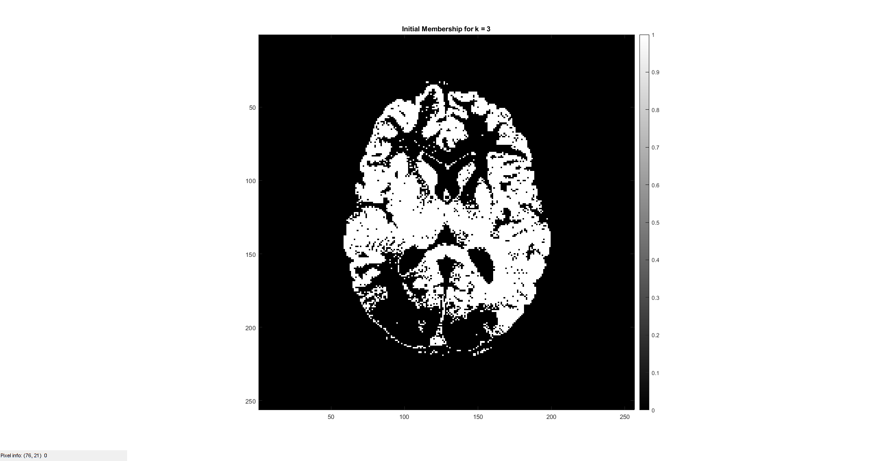
Part d
We choose K Means algorithm to initialise the means Motivation : As taught in class, a more rudimentary model (in our case K Means) is used for initialising a more sophisticated and general model (in our case modified Fuzzy C Means)
fprintf('The initial class means : \n');
disp(class_means);
losses = zeros(num_iter,1);
The initial class means :
0.2525
0.6362
0.4572
Running modified FCM
for iter = 1:num_iter % Finding membership membership = updateMembership(K, q, nbr_mask, class_means, bias, brain_image, brain_mask); % Finding means class_means = updateMeans(K, q, nbr_mask, membership, bias, brain_image); % Finding bias bias = updateBias(K, q, nbr_mask, class_means, membership, brain_image); % Finding loss losses(iter) = calcLoss(K, q, nbr_mask, class_means, membership, bias, brain_image); disp(losses(iter)); end
60.8511 50.3560 46.0558 43.2052 41.3103 40.1214 39.3493 38.7923 38.3548 38.0069 37.7720 37.6229 37.5152 37.4371 37.3831 37.3486 37.3289 37.3186 37.3136 37.3112 37.3101 37.3095 37.3092 37.3091 37.3091 37.3090 37.3090 37.3089 37.3089 37.3090 37.3090 37.3090 37.3090 37.3090 37.3090 37.3089 37.3089 37.3089 37.3089 37.3089 37.3089 37.3089 37.3089 37.3089 37.3089 37.3089 37.3090 37.3089 37.3090 37.3090 37.3090 37.3089 37.3089 37.3089 37.3089 37.3089 37.3088 37.3089 37.3088 37.3089 37.3089 37.3089 37.3089 37.3089 37.3089 37.3089 37.3089 37.3089 37.3089 37.3089 37.3088 37.3089 37.3089 37.3089 37.3089 37.3089 37.3089 37.3089 37.3089 37.3089 37.3089 37.3089 37.3089 37.3089 37.3089 37.3088 37.3089 37.3089 37.3089 37.3089 37.3089 37.3089 37.3089 37.3089 37.3089 37.3089 37.3089 37.3089 37.3089 37.3089
Part e
fig = figure; plot(losses); xlabel('Iteration no.'); ylabel('Objective function'); title("Objective Function v/s Iterations"); saveas(fig,"Objective_Fuzzy.png"); % close(fig);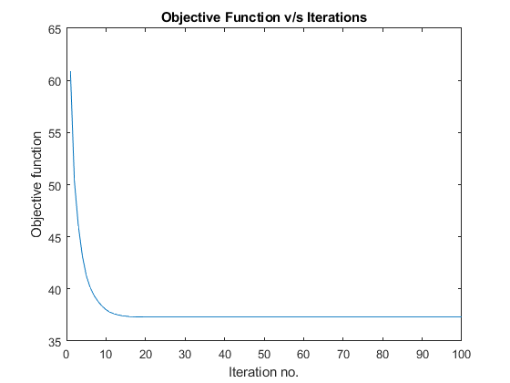
Calculating Results
[class_means, sorted_idx] = sort(class_means); membership_old = membership; membership(:,:,1) = membership_old(:,:,sorted_idx(1)); membership(:,:,2) = membership_old(:,:,sorted_idx(3)); membership(:,:,3) = membership_old(:,:,sorted_idx(2)); % for k = 1:K % membership(:,:,k) = membership_old(:,:,sorted_idx(k)); % end bias_removed_image = zeros(h, w); for k = 1:K ck = class_means(k); bias_removed_image = bias_removed_image + ck * membership(:,:,k); end residual_image = brain_image - bias_removed_image.*bias;
Part f
savefig(my_color_scale,old_brain_image,"Original Brain MRI","Original_Brain_Image.png",0,to_save); savefig(my_color_scale,brain_mask,"Brain Mask","Brain_Mask.png",0,to_save); savefig(my_color_scale,brain_image,"Brain Image after applying mask","Masked_Brain.png",0,to_save); for k = 1:K savefig(my_color_scale,membership(:,:,k),strcat("Optimal Membership for k = ",num2str(k)),strcat("Optimal_Membership_k_",num2str(k),".png"),0,to_save); end savefig(my_color_scale,bias,"Bias Field","Bias_Field.png",0,to_save); savefig(my_color_scale,bias_removed_image,"Bias Removed","Bias_Removed.png",0,to_save); savefig(my_color_scale,residual_image,"Residual","Residual.png",0,to_save);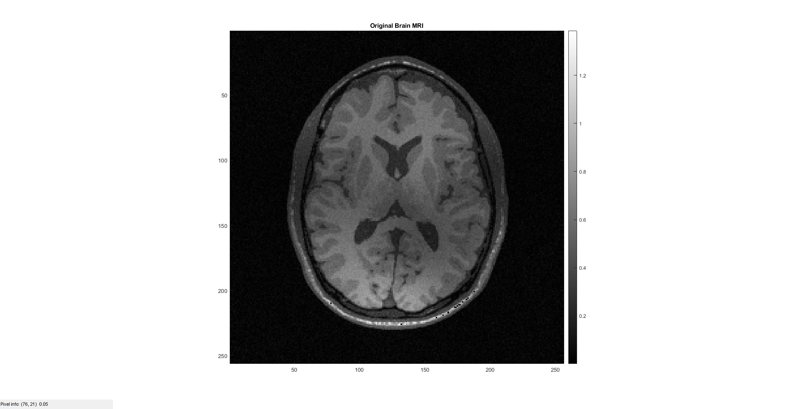 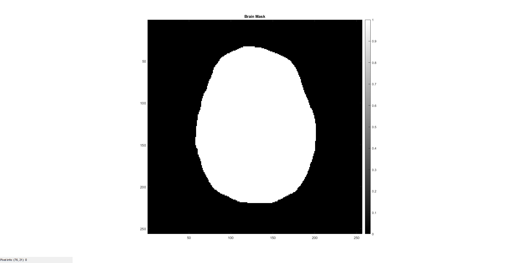 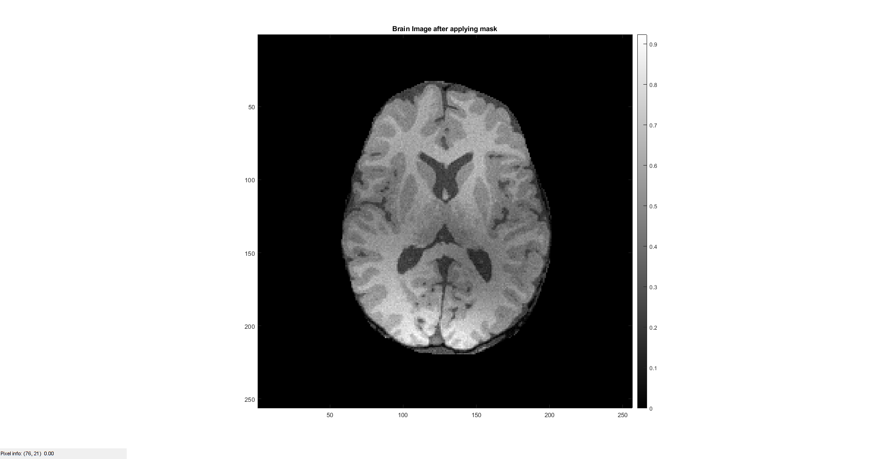 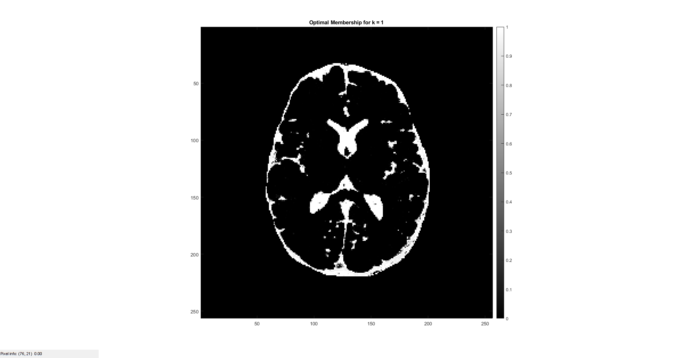 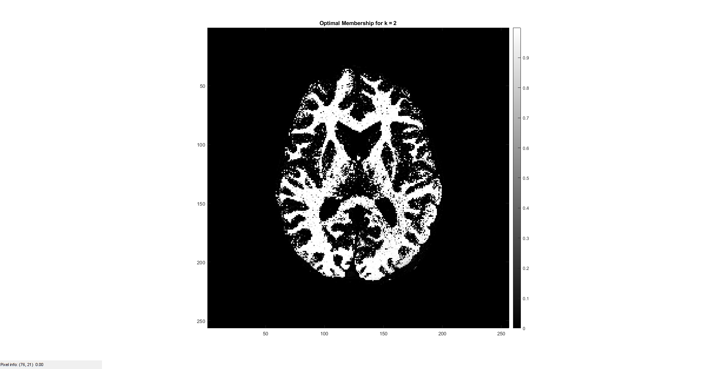 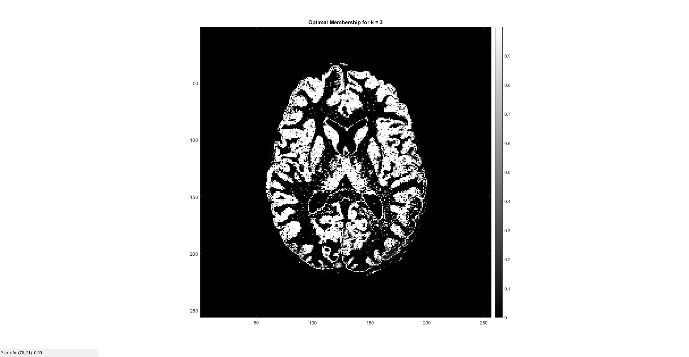 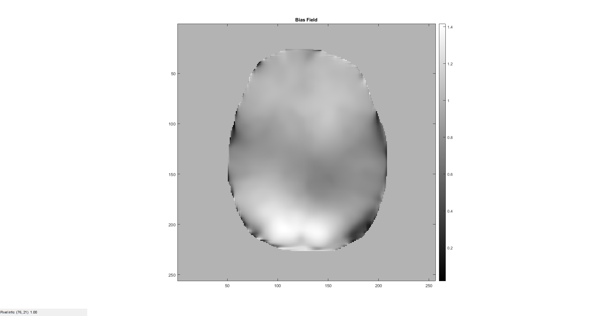 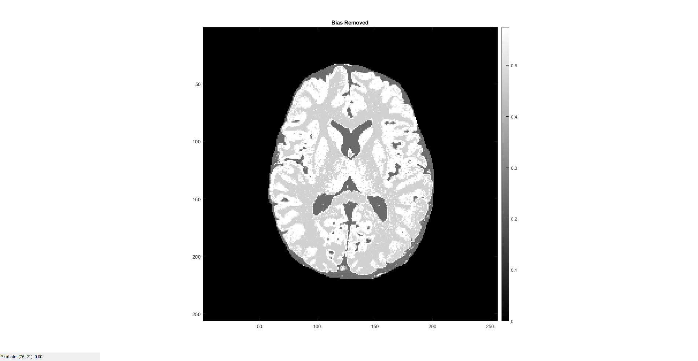 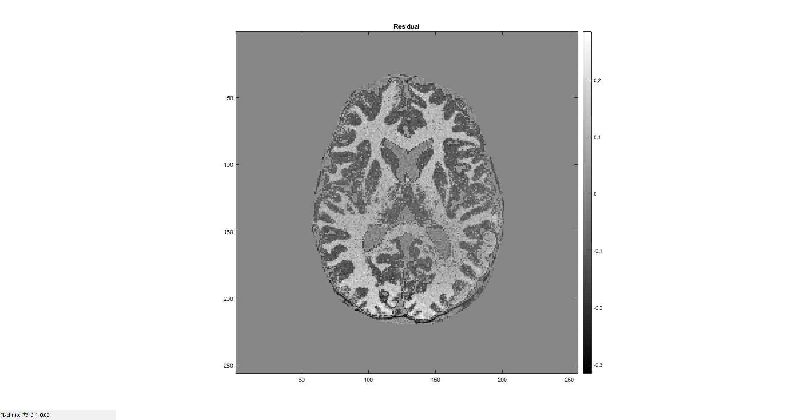
Part g
fprintf('The optimal class means : \n'); disp(class_means); savefig(my_color_scale,membership,"Segmentation Map","Segmentation_Map.png",0,to_save); toc; % Helper function to save the figures % function savefig(my_color_scale,modified_pic,title_name,file_name,is_color,to_save) if to_save==1 fig = figure('units','normalized','outerposition',[0 0 1 1]); colormap(my_color_scale); else fig = figure; colormap(my_color_scale); end if is_color == 1 colormap jet; else colormap(gray); end imagesc(modified_pic), title(title_name), colorbar, daspect([1 1 1]), axis tight; impixelinfo(); if to_save == 1 saveas(fig,file_name); % close(fig); end end
The optimal class means :
0.2407
0.4703
0.5753
Elapsed time is 96.496593 seconds.
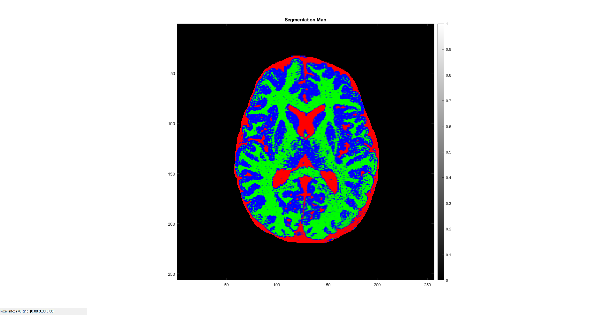